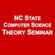

Recent News
-
September 15, 2015

Paper Hyperbolicity, degeneracy, and expansion of random intersection graphs accepted at WAW 2015!
-
September 4, 2015

Congrats to Ph.D. student Drew van der Poel on passing his written preliminary exam (890)!
-
September 2, 2015

New open source release! Check out CONCUSS: Combatting Network Complexity Using Structural Sparsity on github.
-
August 31, 2015
Extended Abstract Graph theoretical analysis of intramuscular fat in the supraspinatus. with undergraduates Yang Ho and Brandon Mork accepted at BMES Annual Meeting 2015!
-
July 30, 2015
Paper Multi-Level Anomaly Detection on Time-Varying Graph Data accepted at ASONAM 2015!
-
July 15, 2015

Dr. Sullivan is co-chairing the 2016 SIAM Workshop on Network Science!
-
July 1, 2015
Paper On the Threshold of Intractability accepted at ESA 2015!
-
June 15, 2015

Dr. Sullivan selected for the NC State Chancellor's Faculty Excellence Program as a member of the Data-Driven Science Cluster
-
June 1, 2015

Welcome to our summer undergraduate researchers: Yang Ho, Clayton Hobbs, and Nishant Rodrigues! (now on the People page.)
-
May 4, 2015
New preprint posted to ArXiv: On the Threshold of Intractability.
-
April 14, 2015

Undergrad researchers Brandon Mork and Clayton Hobbs presented posters at the NC State Undergraduate Research Symposium.
-
April 1, 2015

We're on Twitter @BlairDSullivan (despite the date, this is no joke).
-
March 27, 2015

Abstract selected for talk (from a record 415 submissions!) at NetSci 2015!
Upcoming Talks & Events
-
October 5, 2015
Dana Randall of Georgia Tech graces the Theory Seminar with her presence (and a great talk) at 11:00 am in EBII 3211.
-
October 8-10, 2015
Undergraduate Yang Ho will present a poster on our work (with Dr. Katherine Saul, MAE, NCSU) analyzing fat content in the supraspinatus at the BMES Annual Meeting 2015 in Tampa, FL
-
October 10-11, 2015
(unofficial) Moore Data-Driven Discovery Training Club meeting at UCDavis!
-
November 23, 2015
Claire Monteleoni of GWU is informing us about Climate Informatics in the CS Theory Seminar (11:00 am in EBII 3211) [Rescheduled from April 2015].
-
February 22, 2016
Aaron Clauset of the University of Colorado, Boulder is talking about Network Science in the CS Theory Seminar (time TBA).
-
March 21-26, 2016
Mathematical Biosciences Institute Workshop on Generalized Network Structures and Dynamics